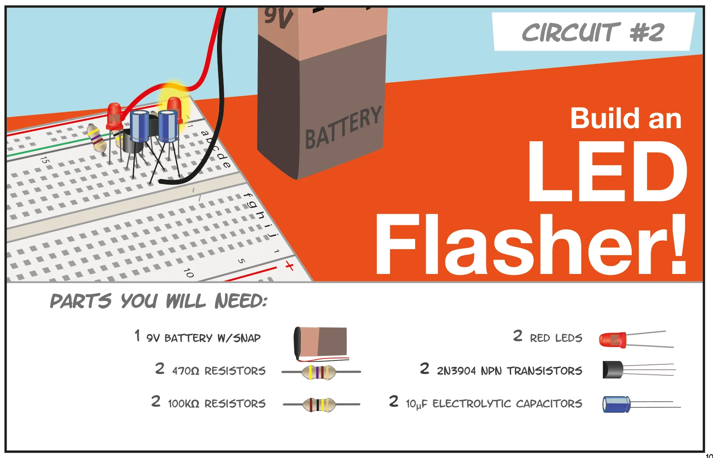
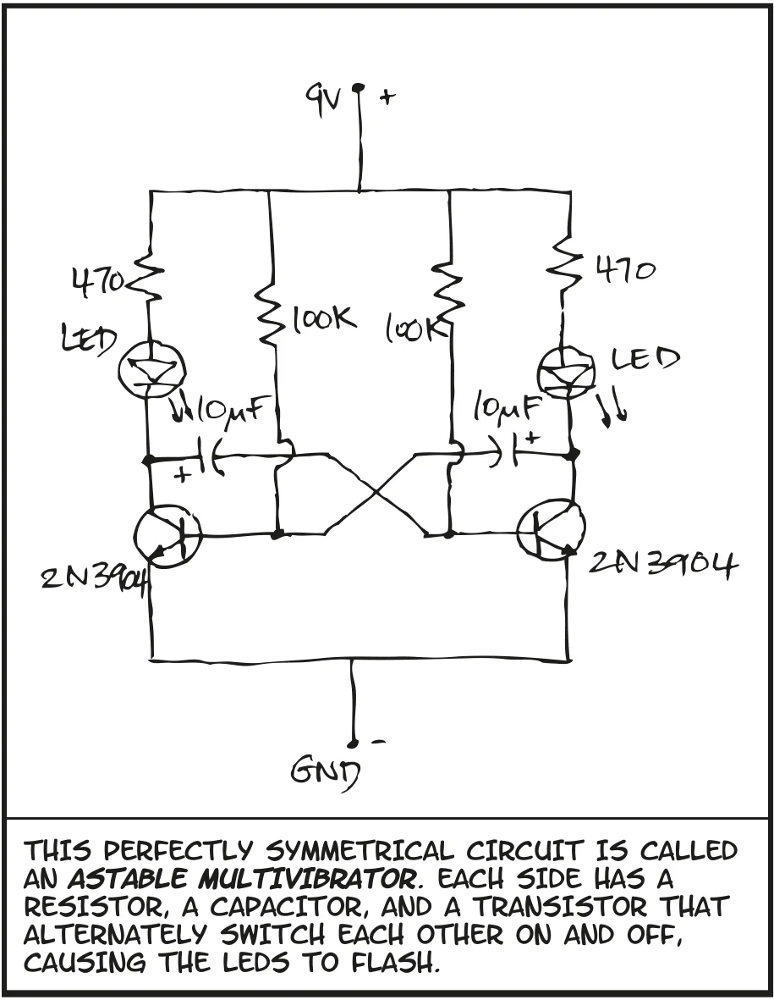
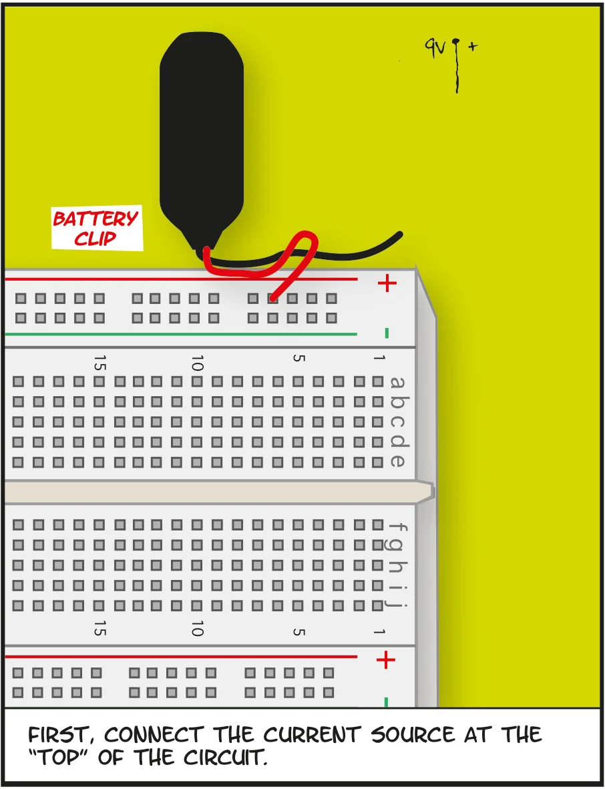
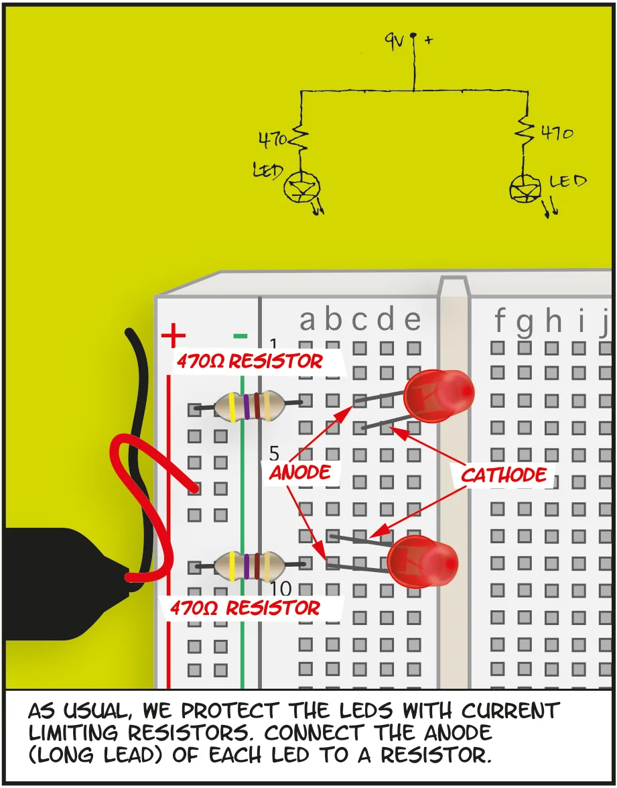
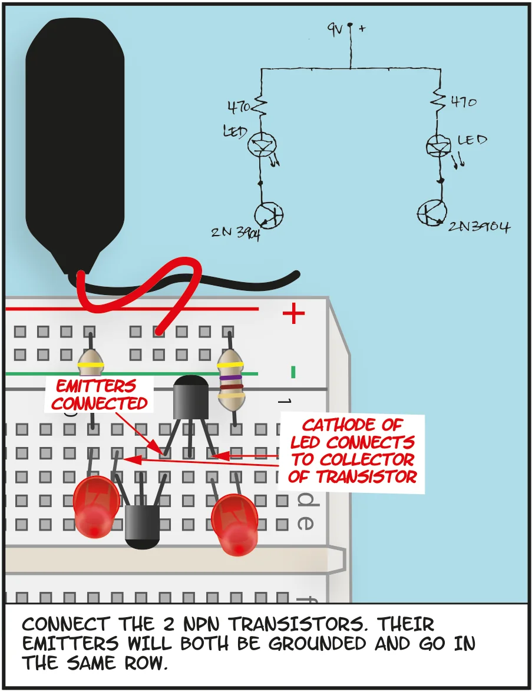
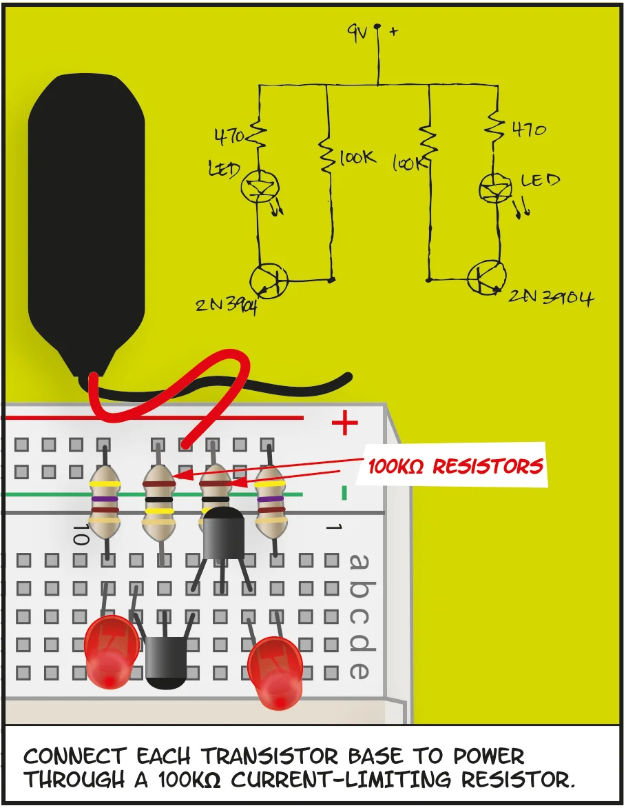
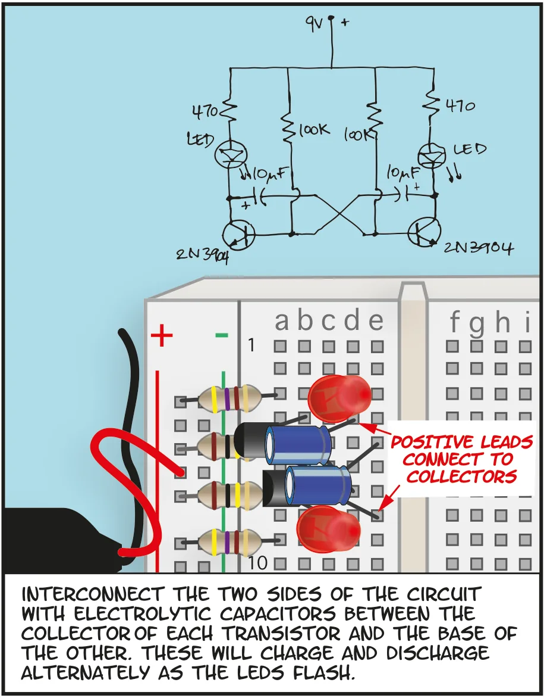
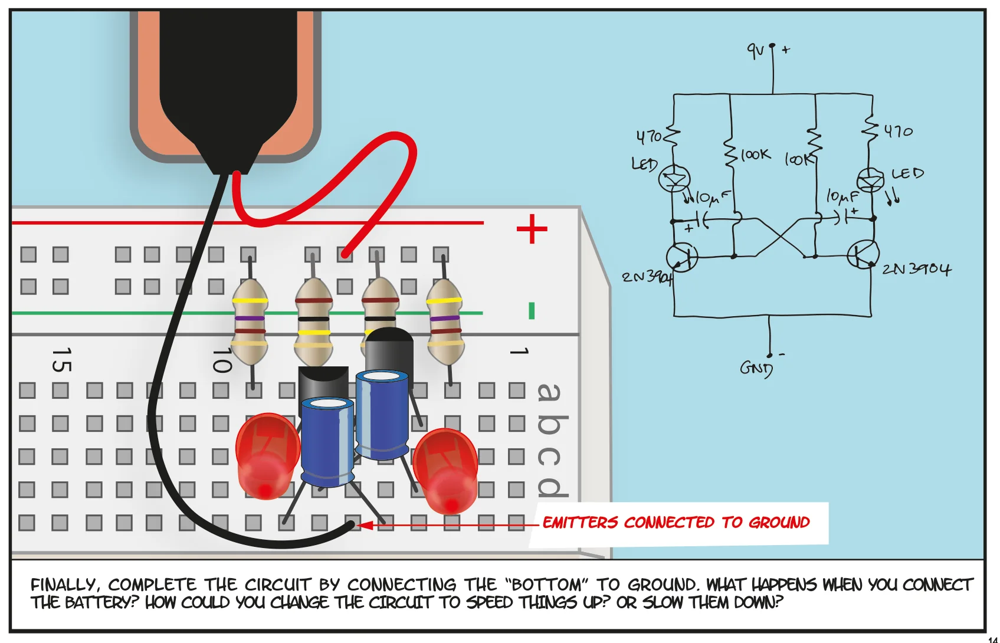

This perfectly symmetrical circuit is called an astable multivibrator. Each side has a resistor, a capacitor, and a transistor that alternately switch each other on and off, causing the LEDs to flash.

First, connect the current source at the “top” of the circuit.

As usual, we protect the LEDs with current limiting resistors. Connect the anode (long lead) of each LED to a resistor.

Connect the 2 NPN transistors. Their emitters will both be grounded and go in the same row.

Connect each transistor base to power through a 100KΩ current-limiting resistor.

Interconnect the two sides of the circuit with electrolytic capacitors between the collector of each transistor and the base of the other. These will charge and discharge alternately as the LEDs flash.

Finally, complete the circuit by connecting the “bottom” to ground. What happens when you connect the battery? How could you change the circuit to speed things up? Or slow them down?